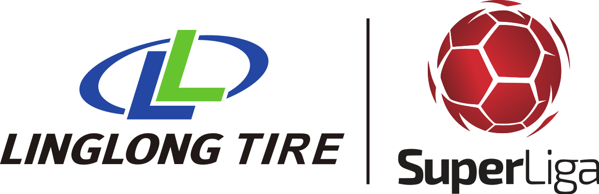

<mat-toolbar color="primary">
    <a routerLink="/">
        
    </a>
    <span style="margin-left: 10px;">Football Fantasy</span>
    <span class="example-spacer"></span>
    <button mat-button routerLink="/admin">
        ADMIN PANEL
        <mat-icon>admin_panel_settings</mat-icon>
    </button>
</mat-toolbar>